39. (Л) Гістограми та scatter plots у matplotlib¶
Зміст лекції¶
- Розподіл і зв'язок: два питання до даних
- Гістограма: що вона показує
bins: кількість інтервалівbins: ширина та межі інтервалів- Частота, частка, щільність:
densityіweights - Теоретична крива поверх гістограми
- Порівняння кількох розподілів
- Накопичувальна гістограма
- Асиметричні дані: логарифмічні інтервали
- Гістограми в pandas
- Scatter: розмір, колір, прозорість
- Колір як третя величина:
cmapіcolorbar - Категорії на scatter
- Бульбашкова діаграма: легенда розмірів
- Перекриття точок:
alpha,hist2d,hexbin - Лінія тренду і кореляція
- Scatter з гістограмами на полях
- Приклад: ринок квартир
- Типові помилки
- Підсумок
Розподіл і зв'язок: два питання до даних¶
У лекції 35 ми вже побудували першу гістограму (hist) і першу діаграму розсіювання (scatter). Ці два графіки відповідають на два найчастіші питання до числових даних:
| Питання | Графік | Приклад |
|---|---|---|
| Які значення однієї величини трапляються і як часто? | гістограма hist |
зріст людей, час відповіді сервера, бали за тест |
| Як пов'язані дві величини? | scatter scatter |
площа і ціна квартири, години підготовки і бал |
Середнє і стандартне відхилення (лекція 30) стискають тисячі чисел до двох. Гістограма показує те, що ці два числа приховують: кілька «горбів», довгий хвіст, викиди. Scatter показує те, що приховує коефіцієнт кореляції: нелінійність, групи, окремі аномальні точки.
Гістограма: що вона показує¶
Гістограма ділить діапазон значень на інтервали (bins) і рахує, скільки значень потрапило в кожен. Висота стовпчика — кількість.
Два набори нижче мають майже однакові середнє і стандартне відхилення, але зовсім різну форму:
import matplotlib.pyplot as plt
import numpy as np
rng = np.random.default_rng(1)
# один "горб"
a = rng.normal(170, 10, size=2000)
# два "горби": дві групи з різним середнім
b = np.concatenate([rng.normal(161, 4, size=1000),
rng.normal(179, 4, size=1000)])
print(f"a: mean={a.mean():.1f}, std={a.std():.1f}")
print(f"b: mean={b.mean():.1f}, std={b.std():.1f}")
fig, (ax1, ax2) = plt.subplots(1, 2, figsize=(9, 3.5), sharex=True, sharey=True,
layout="constrained")
ax1.hist(a, bins=40, edgecolor="white")
ax1.set_title("a: one peak")
ax2.hist(b, bins=40, edgecolor="white", color="tab:orange")
ax2.set_title("b: two peaks")
for ax in (ax1, ax2):
ax.set_xlabel("Height, cm")
ax1.set_ylabel("Count")
plt.show()
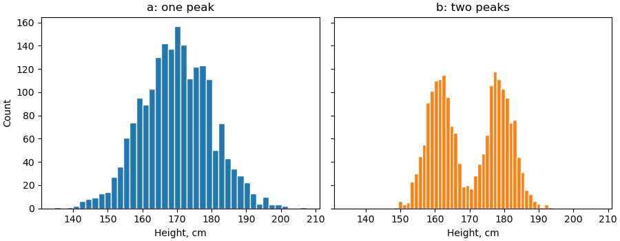
Набір b — це суміш двох груп (наприклад, зріст жінок і чоловіків). Середнє 170 см тут узагалі нетипове значення: людей такого зросту в b менше, ніж будь-якого іншого поблизу.
Спершу гістограма, потім статистика
Перш ніж рахувати середнє, подивіться на розподіл. Якщо «горбів» кілька або є довгий хвіст, середнє може погано описувати дані — краще медіана або розбиття на групи.
bins: кількість інтервалів¶
Кількість інтервалів — головне налаштування гістограми. Від неї залежить, що ви побачите:
import matplotlib.pyplot as plt
import numpy as np
rng = np.random.default_rng(2)
data = np.concatenate([rng.normal(0, 1, size=300),
rng.normal(3, 0.7, size=150)])
fig, axs = plt.subplots(1, 3, figsize=(11, 3.2), sharey=False, layout="constrained")
for ax, bins in zip(axs, [5, 25, 200]):
ax.hist(data, bins=bins, edgecolor="white", linewidth=0.5)
ax.set_title(f"bins={bins}")
plt.show()
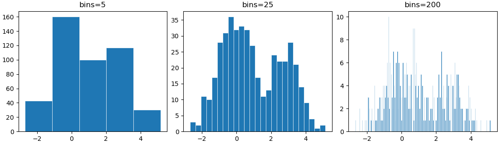
- замало (
bins=5) — другий «горб» зливається з першим, форма втрачена; - забагато (
bins=200) — у кожен інтервал потрапляє 0–5 значень, видно лише шум; - у самий раз (
bins=25) — видно обидва «горби».
Універсального числа немає. Що більше даних, то більше інтервалів можна собі дозволити.
Автоматичний вибір: правила¶
Замість числа bins можна передати назву правила. matplotlib передає його в np.histogram_bin_edges:
| Значення | Як рахує |
|---|---|
"sturges" |
log2(n) + 1 інтервалів; добре для невеликих нормальних вибірок |
"fd" |
Фрідмана — Діаконіса: ширина за міжквартильним розмахом, стійке до викидів |
"auto" |
менша ширина з "sturges" і "fd"; хороший вибір за замовчуванням |
import numpy as np
rng = np.random.default_rng(2)
data = np.concatenate([rng.normal(0, 1, size=300),
rng.normal(3, 0.7, size=150)])
for rule in ["sturges", "fd", "auto"]:
edges = np.histogram_bin_edges(data, bins=rule)
print(f"{rule:8} -> {len(edges) - 1} bins, width {edges[1] - edges[0]:.2f}")
За замовчуванням bins=10
Без параметра bins matplotlib завжди бере 10 інтервалів — незалежно від кількості даних. Для 10 000 значень цього зазвичай замало. Завжди задавайте bins явно.
bins: ширина та межі інтервалів¶
Число інтервалів дає «некруглі» межі: 152.2, 160.4, 168.5… Їх незручно читати. Краще задати межі масивом через np.arange(start, stop, step):
import matplotlib.pyplot as plt
import numpy as np
rng = np.random.default_rng(3)
scores = np.clip(rng.normal(72, 12, size=400).round(), 0, 100)
fig, (ax1, ax2) = plt.subplots(1, 2, figsize=(9, 3.5), sharey=True, layout="constrained")
ax1.hist(scores, bins=12, edgecolor="white")
ax1.set_title("bins=12: odd edges")
# інтервали по 5 балів: [0, 5), [5, 10), ..., [95, 100]
edges = np.arange(0, 101, 5)
ax2.hist(scores, bins=edges, edgecolor="white")
ax2.set_title("bins=np.arange(0, 101, 5)")
ax2.set_xticks(np.arange(0, 101, 10))
for ax in (ax1, ax2):
ax.set_xlabel("Score")
ax1.set_ylabel("Students")
plt.show()
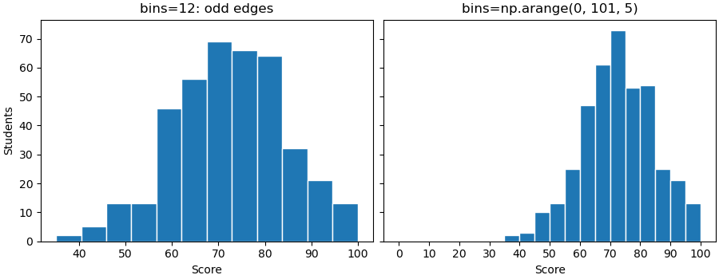
Тепер кожен стовпчик — рівно 5 балів, а межі збігаються з поділками осі.
Які значення потрапляють у інтервал¶
Усі інтервали, крім останнього, напіввідкриті: [a, b) — ліва межа включена, права ні. Останній інтервал закритий: [a, b].
import numpy as np
values = np.array([0, 5, 9, 10, 10, 15, 20])
counts, edges = np.histogram(values, bins=[0, 10, 20])
print(counts)
[0, 10) — значення 0, 5, 9; [10, 20] — 10, 10, 15 і 20 (остання межа включена).
Цілі числа і межі інтервалів
Для цілих даних (бали, вік, кількість) ставте межі між цілими: np.arange(0.5, 11.5, 1) для оцінок 1–10. Інакше залежно від кроку один стовпчик може охопити два цілі значення, а сусідній — одне, і з'являться хибні «зубці».
Дискретні значення: bar замість hist¶
Якщо різних значень мало (кількість дітей у сім'ї, оцінка 1–5), гістограма з інтервалами не потрібна. Порахуйте кожне значення і намалюйте bar:
import matplotlib.pyplot as plt
import numpy as np
rng = np.random.default_rng(4)
grades = rng.choice([1, 2, 3, 4, 5], size=200, p=[0.05, 0.1, 0.3, 0.35, 0.2])
values, counts = np.unique(grades, return_counts=True)
print(values, counts)
fig, ax = plt.subplots(figsize=(6, 3.5))
ax.bar(values, counts, width=0.6)
ax.set(title="Grades distribution", xlabel="Grade", ylabel="Students", xticks=values)
plt.show()
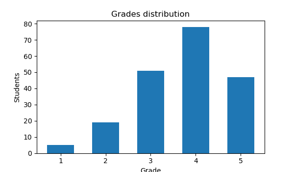
np.unique(..., return_counts=True) повертає унікальні значення та кількість кожного. У pandas те саме — s.value_counts().sort_index().
Частота, частка, щільність: density і weights¶
За замовчуванням висота стовпчика — кількість значень. Це погано, коли треба порівняти вибірки різного розміру: 1000 студентів одного потоку і 150 іншого. Є два способи нормувати висоти.
Частка у відсотках: weights¶
weights — масив ваг, по одній на кожне значення. Висота стовпчика — сума ваг у ньому. Якщо кожному значенню дати вагу 1 / n, висоти стануть частками, а їхня сума — 1:
import matplotlib.pyplot as plt
import numpy as np
from matplotlib.ticker import PercentFormatter
rng = np.random.default_rng(5)
group_a = rng.normal(70, 10, size=1000)
group_b = rng.normal(78, 8, size=150)
edges = np.arange(30, 111, 5)
fig, (ax1, ax2) = plt.subplots(1, 2, figsize=(10, 3.6), layout="constrained")
ax1.hist(group_a, bins=edges, alpha=0.6, label="A (n=1000)")
ax1.hist(group_b, bins=edges, alpha=0.6, label="B (n=150)")
ax1.set(title="Counts: B looks tiny", ylabel="Students")
ax2.hist(group_a, bins=edges, alpha=0.6, label="A (n=1000)",
weights=np.ones(len(group_a)) / len(group_a))
ax2.hist(group_b, bins=edges, alpha=0.6, label="B (n=150)",
weights=np.ones(len(group_b)) / len(group_b))
ax2.yaxis.set_major_formatter(PercentFormatter(xmax=1))
ax2.set(title="Share of group", ylabel="Share of students")
for ax in (ax1, ax2):
ax.set_xlabel("Score")
ax.legend()
plt.show()
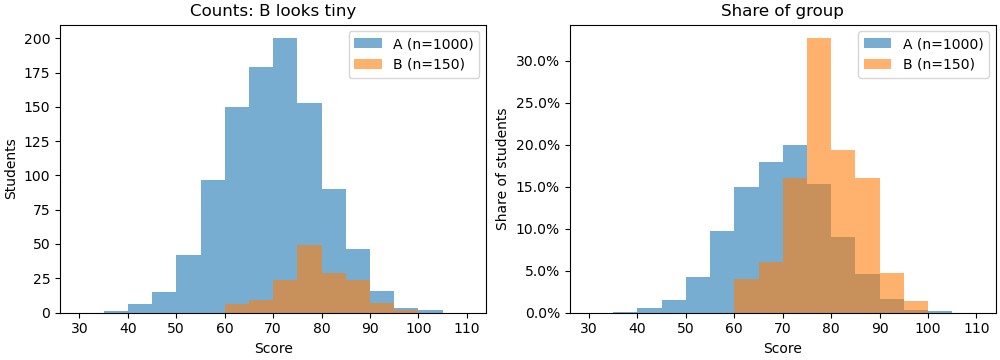
PercentFormatter(xmax=1) (лекція 37) перетворює 0.2 на 20%. Тепер висота стовпчика читається просто: «20% студентів групи B мають 80–85 балів».
Щільність: density=True¶
density=True нормує висоти так, щоб площа всіх стовпчиків дорівнювала 1. Висота стовпчика = частка / ширина інтервалу.
import numpy as np
rng = np.random.default_rng(5)
data = rng.normal(70, 10, size=1000)
counts, edges = np.histogram(data, bins=np.arange(30, 111, 5))
dens, _ = np.histogram(data, bins=edges, density=True)
width = edges[1] - edges[0]
print(f"sum of counts: {counts.sum()}")
print(f"sum of shares: {(counts / counts.sum()).sum():.2f}")
print(f"sum of densities: {dens.sum():.2f}")
print(f"area (dens*width): {(dens * width).sum():.2f}")
| Режим | Висота стовпчика | Сума / площа |
|---|---|---|
| за замовчуванням | кількість | сума висот = n |
weights=1/n |
частка | сума висот = 1 |
density=True |
частка / ширина | площа = 1 |
Щільність потрібна у двох випадках:
- інтервали різної ширини — без
densityширокий інтервал виглядає «важчим» лише тому, що він широкий; - треба накласти теоретичну криву розподілу, яка також має площу 1.
Для звіту, який читатимуть люди, частки у відсотках зазвичай зрозуміліші за щільність.
Теоретична крива поверх гістограми¶
Чи схожі дані на нормальний розподіл? Намалюємо гістограму зі щільністю і поверх неї — криву нормального розподілу з тими самими середнім і стандартним відхиленням:
import matplotlib.pyplot as plt
import numpy as np
def normal_pdf(x, mu, sigma):
return np.exp(-((x - mu) ** 2) / (2 * sigma ** 2)) / (sigma * np.sqrt(2 * np.pi))
rng = np.random.default_rng(6)
normal_data = rng.normal(50, 8, size=1000)
# час очікування: сильно асиметричний розподіл
skewed_data = rng.exponential(8, size=1000) + 42
fig, axs = plt.subplots(1, 2, figsize=(10, 3.6), sharey=True, layout="constrained")
for ax, data, title in zip(axs, [normal_data, skewed_data], ["normal", "skewed"]):
mu, sigma = data.mean(), data.std()
ax.hist(data, bins=40, density=True, color="0.8", edgecolor="white")
x = np.linspace(data.min(), data.max(), 300)
ax.plot(x, normal_pdf(x, mu, sigma), color="tab:red", linewidth=2,
label=f"normal({mu:.0f}, {sigma:.0f})")
ax.set_title(title)
ax.legend()
axs[0].set_ylabel("Density")
plt.show()
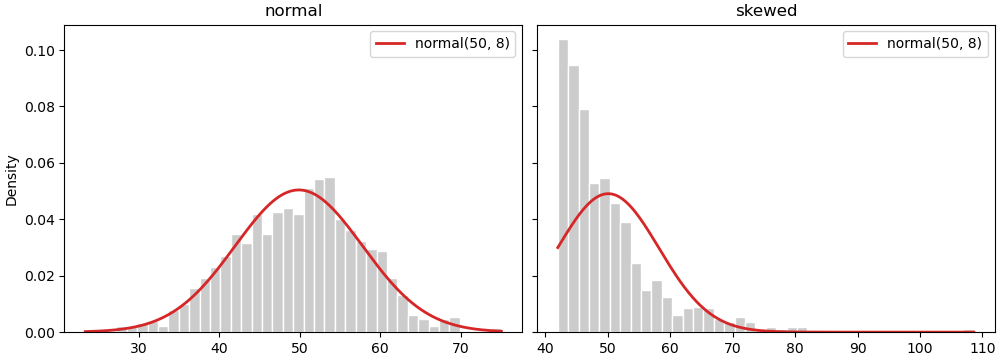
Ліворуч крива лягає на стовпчики — дані близькі до нормальних. Праворуч ні: нормальна крива «вважає», що значення менше 42 трапляються часто, хоча їх немає зовсім. Тут середнє ± 2σ дає хибні межі «типових» значень.
Порівняння кількох розподілів¶
Типова задача: порівняти час відповіді сервера до і після оптимізації, бали двох груп, зарплати в трьох містах. Головне правило — спільні межі інтервалів для всіх наборів. Інакше стовпчики різної ширини неможливо порівнювати.
import matplotlib.pyplot as plt
import numpy as np
rng = np.random.default_rng(8)
before = rng.gamma(4, 30, size=800)
after = rng.gamma(4, 20, size=800)
# спільні межі для обох наборів
edges = np.histogram_bin_edges(np.concatenate([before, after]), bins=40)
fig, axs = plt.subplots(2, 2, figsize=(10, 6), sharex=True, layout="constrained")
axs[0, 0].hist(before, bins=edges, alpha=0.5, label="before")
axs[0, 0].hist(after, bins=edges, alpha=0.5, label="after")
axs[0, 0].set_title("alpha overlay")
axs[0, 1].hist([before, after], bins=edges, label=["before", "after"])
axs[0, 1].set_title("side by side (list of arrays)")
axs[1, 0].hist(before, bins=edges, histtype="step", linewidth=2, label="before")
axs[1, 0].hist(after, bins=edges, histtype="step", linewidth=2, label="after")
axs[1, 0].set_title('histtype="step"')
axs[1, 1].hist([before, after], bins=edges, stacked=True, label=["before", "after"])
axs[1, 1].set_title("stacked=True")
for ax in axs.flat:
ax.legend()
for ax in axs[1]:
ax.set_xlabel("Response time, ms")
plt.show()
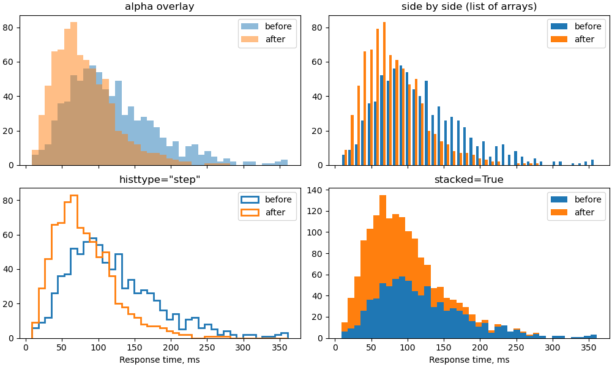
| Спосіб | Коли підходить |
|---|---|
накладання з alpha |
2 набори; перетин видно як змішаний колір |
histtype="step" |
2–4 набори; лише контури, нічого не перекривається |
| список масивів | 2–3 набори; стовпчики поруч, але кожен вужчий |
stacked=True |
набори — частини цілого (запити з різних регіонів); висота стовпчика — загальна кількість |
stacked — не для порівняння форм
На складеній гістограмі форму лише нижнього набору видно чесно. Верхній «стоїть» на нижньому, і його форму важко оцінити. Для порівняння «до / після» використовуйте step або накладання.
Окремі графіки зі спільною віссю¶
Коли наборів більше трьох, накладання стає нечитабельним. Краще — стовпчик графіків зі спільною віссю x (sharex=True, лекція 35):
import matplotlib.pyplot as plt
import numpy as np
rng = np.random.default_rng(9)
cities = {"Kyiv": (38, 12), "Lviv": (31, 9), "Odesa": (29, 10),
"Dnipro": (27, 8), "Kharkiv": (26, 8)}
edges = np.arange(0, 76, 3)
fig, axs = plt.subplots(len(cities), 1, figsize=(7, 7), sharex=True, sharey=True,
layout="constrained")
for ax, (city, (mu, sigma)) in zip(axs, cities.items()):
salary = rng.normal(mu, sigma, size=500).clip(5)
ax.hist(salary, bins=edges, color="tab:blue", edgecolor="white")
ax.axvline(np.median(salary), color="tab:red", linewidth=1.5)
ax.text(0.99, 0.8, city, transform=ax.transAxes, ha="right", fontweight="bold")
ax.spines[["top", "right"]].set_visible(False)
axs[-1].set_xlabel("Salary, thousand UAH (red line: median)")
plt.show()
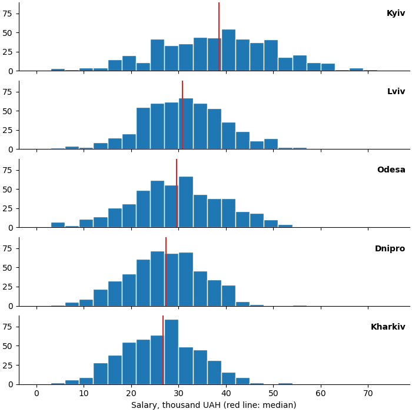
Спільна вісь x дає змогу порівняти зсув розподілів, дивлячись згори вниз, а медіана (червона лінія) — точка відліку. transform=ax.transAxes розміщує підпис у координатах графіка (0–1), а не даних.
Накопичувальна гістограма¶
cumulative=True — кожен стовпчик показує кількість значень не більших за праву межу. Разом із density=True отримаємо частку: «90% запитів швидші за 250 мс».
import matplotlib.pyplot as plt
import numpy as np
from matplotlib.ticker import PercentFormatter
rng = np.random.default_rng(8)
before = rng.gamma(4, 30, size=800)
after = rng.gamma(4, 20, size=800)
p90_before = np.percentile(before, 90)
p90_after = np.percentile(after, 90)
print(f"p90 before: {p90_before:.0f} ms, after: {p90_after:.0f} ms")
fig, ax = plt.subplots(figsize=(8, 4))
edges = np.linspace(0, 400, 401)
ax.hist(before, bins=edges, density=True, cumulative=True, histtype="step",
linewidth=2, label="before")
ax.hist(after, bins=edges, density=True, cumulative=True, histtype="step",
linewidth=2, label="after")
ax.axhline(0.9, color="0.5", linestyle="--", linewidth=1)
for p90 in (p90_before, p90_after):
ax.axvline(p90, color="0.5", linestyle=":", linewidth=1)
ax.yaxis.set_major_formatter(PercentFormatter(xmax=1))
ax.set(title="Cumulative distribution", xlabel="Response time, ms",
ylabel="Share of requests", xlim=(0, 400))
ax.legend(loc="lower right")
ax.grid(True, alpha=0.3)
plt.show()
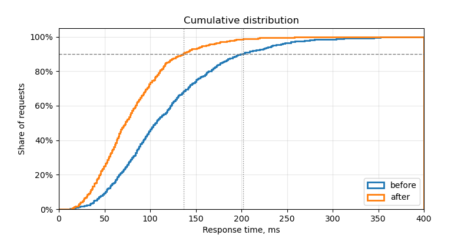
Накопичувальну криву легко читати в обидва боки:
- по горизонталі від частки: на рівні 90% — значення 90-го перцентиля (
np.percentile, лекція 30); - по вертикалі від значення: яка частка запитів швидша за 200 мс.
Крім того, на ній не треба підбирати bins: з дуже дрібними інтервалами (тут 400) крива просто стає гладкою.
ax.ecdf
Починаючи з matplotlib 3.8, є окремий метод ax.ecdf(data) — емпірична функція розподілу без інтервалів узагалі. Результат той самий, що hist(..., cumulative=True, density=True, histtype="step") з нескінченно дрібними інтервалами.
Асиметричні дані: логарифмічні інтервали¶
Доходи, розміри файлів, кількість переглядів — у таких даних більшість значень малі, а кілька — у сотні разів більші. Звичайна гістограма стискає все в один стовпчик біля нуля.
Рішення — логарифмічна вісь x (лекція 37) і інтервали, рівні в логарифмічному масштабі. np.logspace(a, b, n) дає n меж від 10**a до 10**b:
import matplotlib.pyplot as plt
import numpy as np
rng = np.random.default_rng(10)
# розміри файлів у KB
sizes = rng.lognormal(mean=4, sigma=1.5, size=5000)
print(f"min={sizes.min():.1f}, median={np.median(sizes):.1f}, max={sizes.max():.0f}")
fig, (ax1, ax2) = plt.subplots(1, 2, figsize=(10, 3.6), layout="constrained")
ax1.hist(sizes, bins=50, edgecolor="white")
ax1.set(title="Linear bins", xlabel="File size, KB", ylabel="Files")
edges = np.logspace(-1, 5, 50)
ax2.hist(sizes, bins=edges, edgecolor="white")
ax2.set_xscale("log")
ax2.set(title="Log bins + log x-axis", xlabel="File size, KB")
plt.show()
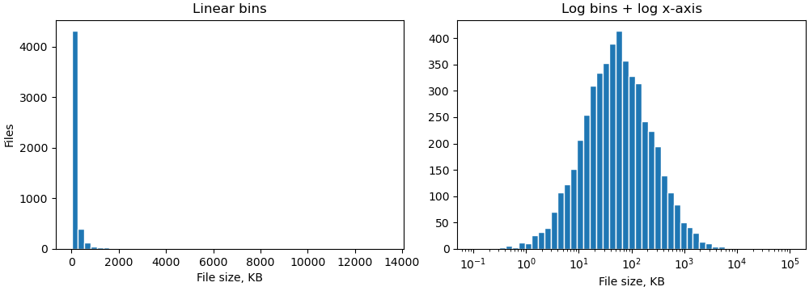
Ліворуч майже всі 5000 файлів в одному стовпчику. Праворуч видно справжню форму: типовий файл — десятки KB, а розкид — від долей KB до десятків MB.
Лише set_xscale("log") не досить
Якщо залишити bins=50 (рівні лінійні інтервали) і лише змінити масштаб осі, стовпчики зліва стануть нескінченно вузькими, а справа — широкими. Межі інтервалів мають бути логарифмічними: np.logspace або np.geomspace(min, max, n).
Коли проблема не в асиметрії, а в тому, що рідкі значення не видно на тлі частих, допомагає логарифмічна вісь y: ax.hist(..., log=True).
Гістограми в pandas¶
Для DataFrame є два швидкі способи. Обидва — обгортки над ax.hist, тож приймають ті самі параметри (bins, edgecolor, density, ...).
import matplotlib.pyplot as plt
import numpy as np
import pandas as pd
rng = np.random.default_rng(11)
df = pd.DataFrame({
"math": rng.normal(72, 12, size=300).clip(0, 100),
"physics": rng.normal(65, 15, size=300).clip(0, 100),
"english": rng.normal(80, 8, size=300).clip(0, 100),
"group": rng.choice(["KI-31", "KI-32"], size=300),
})
# 1. окремий графік для кожного числового стовпця
axs = df.hist(bins=20, figsize=(10, 3.2), layout=(1, 3), edgecolor="white",
sharex=True, sharey=True)
plt.show()
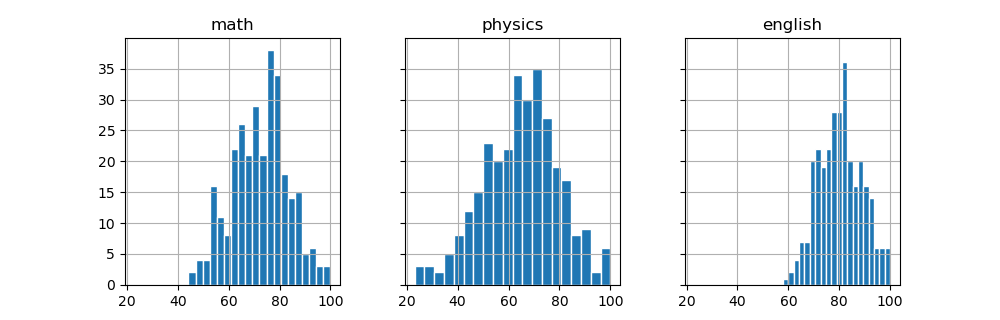
df.hist() повертає масив Axes, які далі можна налаштовувати звичайними методами. Нечислові стовпці (group) ігноруються.
Для порівняння груп зручніше самим пройти по groupby (лекція 34) і малювати на одному Axes:
import matplotlib.pyplot as plt
import numpy as np
import pandas as pd
rng = np.random.default_rng(11)
df = pd.DataFrame({
"math": rng.normal(72, 12, size=300).clip(0, 100),
"group": rng.choice(["KI-31", "KI-32"], size=300),
})
df.loc[df["group"] == "KI-32", "math"] -= 8
edges = np.arange(0, 101, 5)
fig, ax = plt.subplots(figsize=(8, 3.8))
for name, part in df.groupby("group"):
ax.hist(part["math"], bins=edges, histtype="step", linewidth=2,
label=f"{name} (median {part['math'].median():.0f})")
ax.set(title="Math score by group", xlabel="Score", ylabel="Students")
ax.legend(loc="upper left")
plt.show()
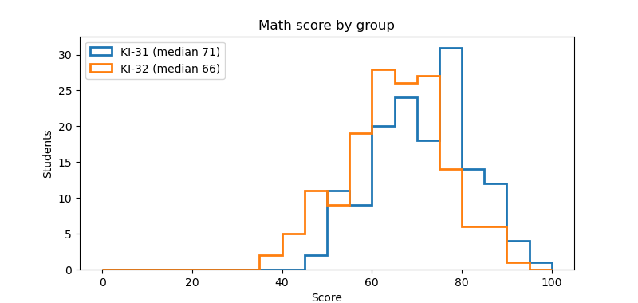
Scatter: розмір, колір, прозорість¶
Тепер — діаграма розсіювання. Кожна точка — один об'єкт (студент, квартира, запит), її положення — значення двох величин.
ax.scatter(x, y, ...) приймає параметри, які можуть бути одним значенням для всіх точок або масивом — окремим значенням для кожної:
| Параметр | Що задає | Приклад |
|---|---|---|
s |
площа маркера в пунктах² | s=20, s=sizes |
c / color |
колір | color="tab:red", c=values |
marker |
форма | "o", "s", "^", "x", "D" |
alpha |
прозорість 0–1 | alpha=0.5 |
edgecolors |
колір обводки | edgecolors="white", "black" |
linewidths |
товщина обводки | linewidths=0.5 |
import matplotlib.pyplot as plt
import numpy as np
rng = np.random.default_rng(12)
x = rng.uniform(0, 10, size=60)
y = 2 * x + rng.normal(0, 3, size=60)
fig, axs = plt.subplots(1, 3, figsize=(11, 3.4), sharey=True, layout="constrained")
axs[0].scatter(x, y)
axs[0].set_title("default")
axs[1].scatter(x, y, s=80, color="tab:orange", edgecolors="black", linewidths=0.5)
axs[1].set_title("s=80, edgecolors")
axs[2].scatter(x, y, s=60, marker="D", color="tab:green", alpha=0.5)
axs[2].set_title('marker="D", alpha=0.5')
plt.show()
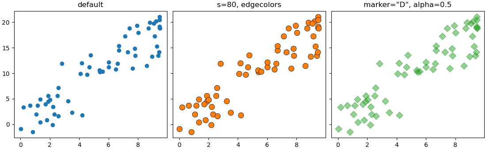
s — це площа, а не радіус
s=40 — у 4 рази більша площа, ніж s=10, але діаметр лише вдвічі більший. Так і має бути: око порівнює площі. Якщо розмір кодує величину, передавайте в s значення, пропорційні величині, а не її квадрату.
scatter чи plot(..., "o")?¶
Точки можна намалювати і через ax.plot(x, y, "o") — без ліній, лише маркери. Це швидше для великих масивів (100 000+ точок), але розмір і колір — одні для всіх. Правило:
- усі точки однакові →
plot(x, y, "o")абоscatter; - розмір або колір залежить від даних → лише
scatter.
Колір як третя величина: cmap і colorbar¶
Якщо передати в c масив чисел, matplotlib перетворить кожне число на колір за колірною картою (colormap). Так на площині можна показати третю величину:
import matplotlib.pyplot as plt
import numpy as np
rng = np.random.default_rng(13)
n = 150
# координати метеостанцій і висота над рівнем моря
lon = rng.uniform(22, 40, size=n)
lat = rng.uniform(44.5, 52.3, size=n)
altitude = np.clip(1800 * np.exp(-((lon - 24) ** 2 + (lat - 48.3) ** 2) / 3)
+ rng.normal(150, 60, size=n), 0, None)
fig, ax = plt.subplots(figsize=(8, 4.5))
sc = ax.scatter(lon, lat, c=altitude, cmap="viridis", s=40,
edgecolors="white", linewidths=0.4)
fig.colorbar(sc, ax=ax, label="Altitude, m")
ax.set(title="Weather stations", xlabel="Longitude", ylabel="Latitude")
ax.set_aspect(1.4)
plt.show()
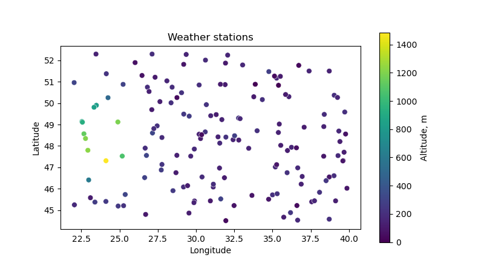
c=altitude— числа, з яких береться колір;cmap="viridis"— яку шкалу кольорів використовувати;ax.scatterповертає об'єктPathCollection— його передаємо уfig.colorbar, щоб намалювати шкалу з підписами.
Без colorbar колір не можна прочитати: незрозуміло, яка висота відповідає жовтому.
Вибір колірної карти¶
import matplotlib.pyplot as plt
import numpy as np
cmaps = {
"sequential": ["viridis", "Blues", "magma"],
"diverging": ["RdBu_r", "coolwarm", "PiYG"],
"qualitative": ["tab10", "Set2", "Paired"],
}
gradient = np.linspace(0, 1, 256).reshape(1, -1)
fig, axs = plt.subplots(9, 1, figsize=(7, 4), layout="constrained")
i = 0
for kind, names in cmaps.items():
for name in names:
axs[i].imshow(gradient, aspect="auto", cmap=name)
axs[i].set_axis_off()
axs[i].text(-0.01, 0.5, f"{kind}: {name}", transform=axs[i].transAxes,
ha="right", va="center", fontsize=9)
i += 1
plt.show()
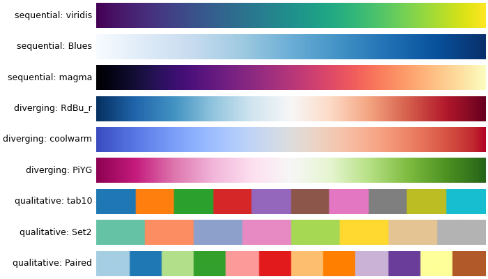
| Тип | Коли | Приклади |
|---|---|---|
| послідовна (sequential) | від меншого до більшого: висота, ціна, щільність | viridis, plasma, Blues, Greens |
| розбіжна (diverging) | відхилення від центру: вище/нижче норми, прибуток/збиток | RdBu_r, coolwarm, PiYG |
| якісна (qualitative) | категорії без порядку | tab10, Set2 — але для категорій краще окремі scatter (наступний розділ) |
Не використовуйте jet і rainbow
Веселкові карти мають яскраві «смуги» (жовту, блакитну), які око сприймає як межі, хоча в даних їх немає. До того ж на чорно-білому друку вони нечитабельні. viridis — рівномірна за яскравістю і читабельна для людей із порушенням кольорового зору.
Для розбіжної карти центр шкали має збігатися з «нулем» — нормою, нульовим прибутком. Задайте симетричні межі vmin, vmax:
import matplotlib.pyplot as plt
import numpy as np
rng = np.random.default_rng(14)
month = rng.integers(1, 13, size=200)
day = rng.integers(1, 29, size=200)
# відхилення температури від норми
anomaly = rng.normal(0.8, 2.5, size=200)
limit = np.abs(anomaly).max()
fig, ax = plt.subplots(figsize=(8, 4))
sc = ax.scatter(month, day, c=anomaly, cmap="RdBu_r", vmin=-limit, vmax=limit,
s=50, edgecolors="0.3", linewidths=0.3)
fig.colorbar(sc, ax=ax, label="Deviation from norm, C")
ax.set(title="Temperature anomaly", xlabel="Month", ylabel="Day", xticks=range(1, 13))
plt.show()
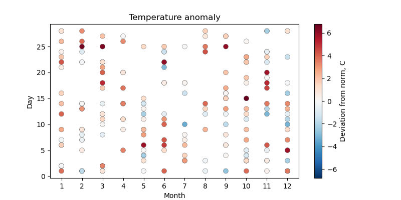
Без vmin=-limit, vmax=limit білий колір відповідав би не нулю, а середині діапазону даних (тут близько +0.8), і «трохи тепліше за норму» виглядало б як «норма».
_r у назві — обернена карта: RdBu — від червоного до синього, RdBu_r — від синього (холодно) до червоного (тепло).
Категорії на scatter¶
Для категорій (місто, група, тип) не передавайте коди категорій у c= з колірною картою — вийде шкала, якої немає. Правильний шлях — окремий scatter для кожної категорії з власним label:
import matplotlib.pyplot as plt
import numpy as np
import pandas as pd
rng = np.random.default_rng(15)
rows = []
for species, (length, width) in {"setosa": (1.5, 0.25),
"versicolor": (4.3, 1.3),
"virginica": (5.5, 2.0)}.items():
for _ in range(50):
rows.append({"species": species,
"petal_length": rng.normal(length, 0.4),
"petal_width": rng.normal(width, 0.2)})
df = pd.DataFrame(rows)
markers = {"setosa": "o", "versicolor": "s", "virginica": "^"}
fig, ax = plt.subplots(figsize=(7, 4.5))
for species, part in df.groupby("species"):
ax.scatter(part["petal_length"], part["petal_width"],
marker=markers[species], s=35, alpha=0.8, label=species)
ax.set(title="Iris petals", xlabel="Petal length, cm", ylabel="Petal width, cm")
ax.legend(title="Species")
ax.grid(True, alpha=0.3)
plt.show()
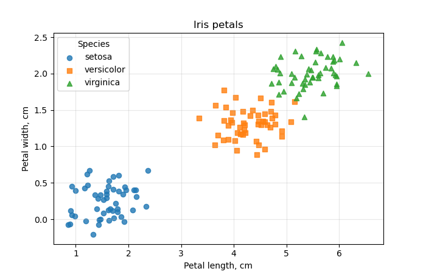
Кожен виклик scatter бере наступний колір із циклу кольорів (лекція 37), а legend автоматично збирає підписи. Різні маркери дублюють колір — графік читається і на чорно-білому друку.
Бульбашкова діаграма: легенда розмірів¶
Розмір точки s може кодувати четверту величину. Такий графік називають бульбашковим (bubble chart):
import matplotlib.pyplot as plt
import numpy as np
countries = ["UA", "PL", "DE", "FR", "IT", "ES", "RO", "CZ", "HU", "NL"]
gdp_per_capita = [5.2, 22.1, 52.7, 44.4, 38.4, 33.5, 18.5, 30.5, 22.1, 62.5]
life_expectancy = [73.0, 78.6, 81.2, 83.1, 83.7, 83.9, 76.6, 79.8, 76.9, 82.0]
population = [37.0, 36.7, 84.5, 68.2, 58.9, 48.4, 19.0, 10.9, 9.6, 17.9]
internet = [79, 87, 93, 86, 86, 95, 89, 85, 91, 97]
fig, ax = plt.subplots(figsize=(8.5, 5), layout="constrained")
sc = ax.scatter(gdp_per_capita, life_expectancy,
s=np.array(population) * 15, c=internet, cmap="viridis",
alpha=0.7, edgecolors="black", linewidths=0.5)
for name, x, y in zip(countries, gdp_per_capita, life_expectancy):
ax.annotate(name, (x, y), xytext=(0, 0), textcoords="offset points",
ha="center", va="center", fontsize=8)
fig.colorbar(sc, ax=ax, label="Internet users, %")
# легенда розмірів: кружки для 10, 40 і 80 млн
handles, labels = sc.legend_elements(prop="sizes", num=[10, 40, 80],
func=lambda s: s / 15, alpha=0.5, color="0.5")
ax.legend(handles, labels, title="Population, mln", loc="lower right",
labelspacing=1.6, borderpad=1.2)
ax.set(title="GDP, life expectancy, population, internet (2023, approx.)",
xlabel="GDP per capita, thousand USD", ylabel="Life expectancy, years",
xlim=(0, 70), ylim=(71, 86))
ax.grid(True, alpha=0.3)
plt.show()
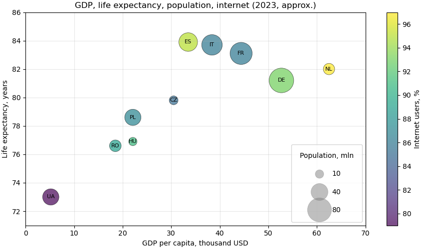
На одному графіку чотири величини: x — ВВП, y — тривалість життя, розмір — населення, колір — частка користувачів інтернету.
sc.legend_elements(prop="sizes", ...) створює «зразки» кружків для легенди:
num=[10, 40, 80]— які значення показати (в одиницях післяfunc, тобто в мільйонах);func=lambda s: s / 15— як перерахуватиsназад у населення для підписів (ми множили на 15);labelspacing,borderpad— більше місця, щоб великі кружки не налазили один на одного.
Бульбашки — обережно
Око погано порівнює площі: різницю між 40 і 50 млн на бульбашках не видно. Використовуйте розмір лише для приблизного порядку величини, а важливі числа підписуйте.
Перекриття точок: alpha, hist2d, hexbin¶
Коли точок тисячі, вони лягають одна на одну (overplotting). Хмара стає суцільною плямою, і не видно, де точок насправді більше.
import matplotlib.pyplot as plt
import numpy as np
rng = np.random.default_rng(16)
n = 30000
x = rng.normal(0, 1, size=n)
y = 0.6 * x + rng.normal(0, 0.8, size=n)
# невелика окрема група всередині хмари
x = np.concatenate([x, rng.normal(1.2, 0.2, size=2500)])
y = np.concatenate([y, rng.normal(-0.6, 0.2, size=2500)])
fig, axs = plt.subplots(2, 2, figsize=(10, 8), sharex=True, sharey=True,
layout="constrained")
axs[0, 0].scatter(x, y, s=5)
axs[0, 0].set_title("scatter: solid blob")
axs[0, 1].scatter(x, y, s=2, alpha=0.05, color="black")
axs[0, 1].set_title("scatter: s=2, alpha=0.05")
*_, img = axs[1, 0].hist2d(x, y, bins=60, cmap="Blues")
fig.colorbar(img, ax=axs[1, 0], label="Points in cell")
axs[1, 0].set_title("hist2d")
hb = axs[1, 1].hexbin(x, y, gridsize=40, cmap="Blues", mincnt=1)
fig.colorbar(hb, ax=axs[1, 1], label="Points in cell")
axs[1, 1].set_title("hexbin")
plt.show()
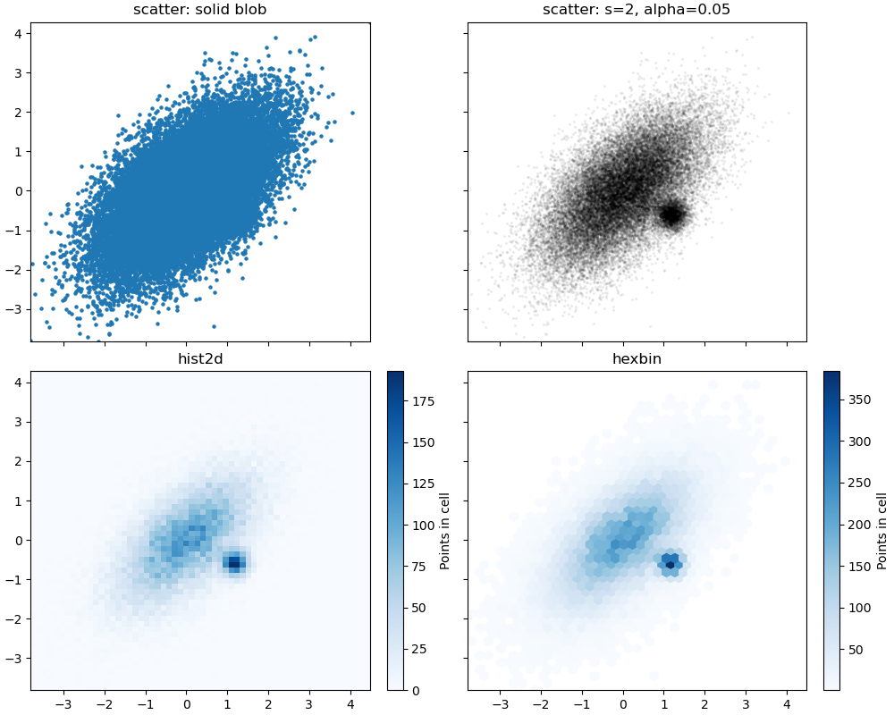
alpha+ малийs— найпростіше: там, де точок багато, колір темніший. Підходить до ~50 000 точок;hist2d(x, y, bins=...)— двовимірна гістограма: площина ділиться на прямокутні клітинки, колір — кількість точок у клітинці. Повертає(counts, xedges, yedges, image); дляcolorbarпотрібен останній елемент;hexbin(x, y, gridsize=...)— те саме з шестикутними клітинками, вони краще передають форму хмари.mincnt=1не зафарбовує порожні клітинки.
На першому графіку окрема група всередині хмари зовсім не видна: точки просто зафарбовують одне й те саме місце. На hist2d і hexbin вона — друга темна пляма поруч із центром.
Логарифмічна шкала кольору
Якщо в центрі тисячі точок, а по краях одиниці, краї будуть майже білими. hexbin(..., bins="log") або hist2d(..., norm="log") робить шкалу кольору логарифмічною.
Лінія тренду і кореляція¶
Коефіцієнт кореляції¶
np.corrcoef(x, y) повертає матрицю 2×2; коефіцієнт кореляції Пірсона — елемент [0, 1]. Він від −1 до 1 і показує, наскільки точки близькі до прямої:
import matplotlib.pyplot as plt
import numpy as np
rng = np.random.default_rng(17)
x = rng.uniform(-3, 3, size=200)
cases = {
"strong positive": 2 * x + rng.normal(0, 1, size=200),
"weak negative": -0.5 * x + rng.normal(0, 2, size=200),
"none": rng.normal(0, 2, size=200),
"nonlinear": x ** 2 + rng.normal(0, 0.5, size=200),
}
fig, axs = plt.subplots(1, 4, figsize=(12, 3.2), layout="constrained")
for ax, (title, y) in zip(axs, cases.items()):
r = np.corrcoef(x, y)[0, 1]
ax.scatter(x, y, s=8, alpha=0.6)
ax.set_title(f"{title}\nr = {r:.2f}")
ax.set_xticks([])
ax.set_yticks([])
plt.show()
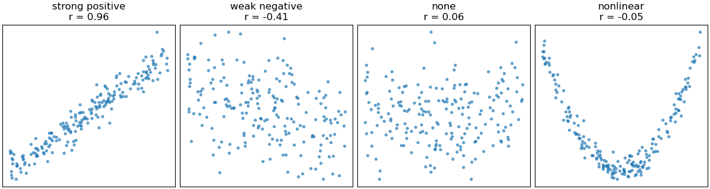
Останній графік — важливий урок: залежність сильна (парабола), а r ≈ 0. Коефіцієнт кореляції бачить лише лінійний зв'язок. Тому завжди дивіться на scatter, а не лише на число.
Пряма тренду: np.polyfit¶
np.polyfit(x, y, deg) знаходить поліном степеня deg, найближчий до точок (метод найменших квадратів). Для прямої deg=1, результат — [нахил, зсув]:
import matplotlib.pyplot as plt
import numpy as np
rng = np.random.default_rng(18)
hours = rng.uniform(0, 10, size=60)
score = 40 + 5 * hours + rng.normal(0, 6, size=60)
slope, intercept = np.polyfit(hours, score, deg=1)
r = np.corrcoef(hours, score)[0, 1]
print(f"score = {slope:.2f} * hours + {intercept:.2f}, r = {r:.2f}")
x_line = np.linspace(0, 10, 100)
y_line = slope * x_line + intercept
fig, ax = plt.subplots(figsize=(7, 4.5))
ax.scatter(hours, score, alpha=0.7, label="students")
ax.plot(x_line, y_line, color="tab:red", linewidth=2,
label=f"trend: {slope:.1f} points per hour")
ax.text(0.03, 0.95, f"r = {r:.2f}", transform=ax.transAxes, va="top")
ax.set(title="Study hours vs score", xlabel="Hours", ylabel="Score")
ax.legend(loc="lower right")
ax.grid(True, alpha=0.3)
plt.show()
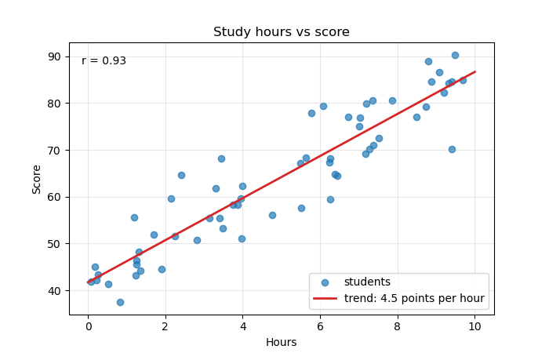
Нахил 4.49 читається так: кожна додаткова година підготовки в середньому дає +4.5 бала. np.polyval(coefs, x) обчислює поліном у точках — зручно для deg=2 і вище:
import numpy as np
rng = np.random.default_rng(19)
x = rng.uniform(-3, 3, size=100)
y = x ** 2 + rng.normal(0, 0.5, size=100)
coefs = np.polyfit(x, y, deg=2)
print(coefs.round(2))
print(np.polyval(coefs, [0, 1, 2]).round(2))
Кореляція — не причинність
Продаж морозива і кількість утоплень корелюють: обидва ростуть улітку. Scatter і r показують, що величини змінюються разом, але не показують, що одна спричиняє іншу. І не продовжуйте лінію тренду далеко за межі даних: 20 годин підготовки не дадуть 140 балів зі 100.
Scatter з гістограмами на полях¶
Scatter показує зв'язок, але погано показує розподіл кожної величини окремо: 500 точок в одному місці виглядають так само, як 50. Класичне рішення — гістограми на полях (marginal histograms).
Зручно зібрати таку фігуру через fig.subplot_mosaic — компонування задається «малюнком» із літер:
import matplotlib.pyplot as plt
import numpy as np
rng = np.random.default_rng(20)
area = rng.lognormal(np.log(55), 0.35, size=600)
price = area * rng.normal(1.6, 0.3, size=600)
fig, axd = plt.subplot_mosaic(
[["top", "."],
["main", "right"]],
width_ratios=[4, 1], height_ratios=[1, 4],
figsize=(7, 7), layout="constrained",
)
ax, ax_top, ax_right = axd["main"], axd["top"], axd["right"]
# спільні осі з головним графіком
ax_top.sharex(ax)
ax_right.sharey(ax)
ax.scatter(area, price, s=10, alpha=0.4)
ax.set(xlabel="Area, m2", ylabel="Price, thousand USD")
ax_top.hist(area, bins=40, color="0.6")
ax_right.hist(price, bins=40, color="0.6", orientation="horizontal")
for a in (ax_top, ax_right):
a.spines[["top", "right"]].set_visible(False)
ax_top.tick_params(labelbottom=False)
ax_right.tick_params(labelleft=False)
fig.suptitle("Apartments: area vs price")
plt.show()
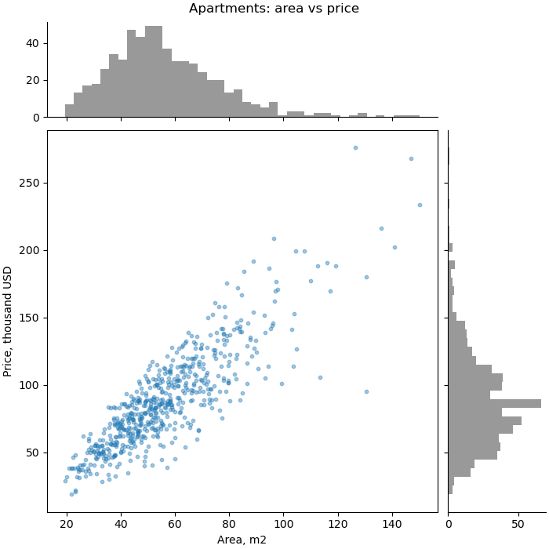
- кожен рядок списку — рядок сітки, кожна літера (рядок) — назва
Axes; однакові назви поруч об'єднуються в один великийAxes,"."— порожня клітинка; axd— словник{назва: Axes};width_ratios,height_ratios— відносні розміри колонок і рядків;sharex/sharey— гістограми зсуваються і масштабуються разом із головним графіком;orientation="horizontal"— гістограма «лежить» на боці, стовпчики йдуть праворуч.
Приклад: ринок квартир¶
Зберемо все разом. Згенеруємо дані про продаж квартир у п'яти районах і відповімо на кілька питань одним рисунком:
- Який розподіл ціни за м²?
- Як ціна залежить від площі, і чи відрізняються райони?
- Як ціна за м² залежить від поверху й віку будинку?
import matplotlib.pyplot as plt
import numpy as np
import pandas as pd
from matplotlib.ticker import PercentFormatter
rng = np.random.default_rng(2025)
# 1. дані: базова ціна за m2 (тис. USD) для кожного району
districts = {"Center": 2.6, "Pechersk": 3.1, "Obolon": 1.6,
"Troieshchyna": 1.0, "Holosiiv": 1.7}
rows = []
for district, base in districts.items():
n = 160
area = rng.lognormal(np.log(58), 0.35, size=n).clip(18, 200)
age = rng.integers(0, 70, size=n)
floor = rng.integers(1, 26, size=n)
price_m2 = base * (1 - 0.006 * age) * rng.normal(1, 0.12, size=n)
rows.append(pd.DataFrame({"district": district, "area": area, "age": age,
"floor": floor, "price_m2": price_m2}))
df = pd.concat(rows, ignore_index=True)
df["price"] = df["area"] * df["price_m2"]
print(df.groupby("district")["price_m2"].median().sort_values().round(2))
r = np.corrcoef(df["area"], df["price"])[0, 1]
print(f"corr(area, price) = {r:.2f}")
# 2. рисунок
fig, axd = plt.subplot_mosaic([["hist", "scatter"],
["age", "scatter"]],
figsize=(12, 7), width_ratios=[1, 1.4],
layout="constrained")
# гістограма ціни за m2, частки у відсотках
edges = np.arange(0, 4.01, 0.1)
ax = axd["hist"]
ax.hist(df["price_m2"], bins=edges, weights=np.ones(len(df)) / len(df),
color="0.6", edgecolor="white")
ax.axvline(df["price_m2"].median(), color="tab:red", linestyle="--",
label=f"median {df['price_m2'].median():.2f}")
ax.yaxis.set_major_formatter(PercentFormatter(xmax=1))
ax.set(title="Price per m2", xlabel="Thousand USD per m2", ylabel="Share of flats")
ax.legend()
# площа проти ціни, район - колір
ax = axd["scatter"]
order = df.groupby("district")["price_m2"].median().sort_values(ascending=False).index
for district in order:
part = df[df["district"] == district]
ax.scatter(part["area"], part["price"], s=14, alpha=0.6, label=district)
k = np.polyfit(part["area"], part["price"], deg=1)
x = np.array([part["area"].min(), part["area"].max()])
ax.plot(x, np.polyval(k, x), linewidth=1.5)
ax.set(title=f"Area vs price (r = {r:.2f})", xlabel="Area, m2",
ylabel="Price, thousand USD")
ax.legend(title="District", loc="upper left")
ax.grid(True, alpha=0.3)
# вік будинку проти ціни за m2, колір - поверх
ax = axd["age"]
sc = ax.scatter(df["age"], df["price_m2"], c=df["floor"], cmap="viridis",
s=10, alpha=0.7)
fig.colorbar(sc, ax=ax, label="Floor")
ax.set(title="Building age vs price per m2", xlabel="Building age, years",
ylabel="Thousand USD per m2")
fig.suptitle("Apartment market (simulated data)", fontweight="bold")
fig.savefig("apartments.png", dpi=150)
plt.show()
district
Troieshchyna 0.79
Obolon 1.24
Holosiiv 1.29
Center 2.02
Pechersk 2.37
Name: price_m2, dtype: float64
corr(area, price) = 0.65
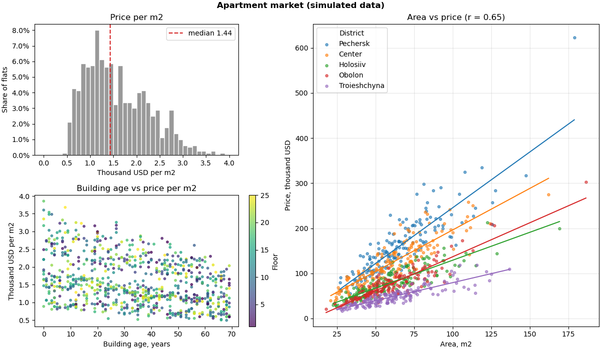
Що видно:
- гістограма — широкий розподіл із довгим правим хвостом і «плечем» біля 2–2.5: це суміш дешевих і дорогих районів; одна медіана тут мало що каже;
- scatter площа — ціна — загальна кореляція лише 0.65, але в кожному районі точки лежать майже на прямій. Низьке
r— не через відсутність зв'язку, а через суміш груп з різним нахилом. Райони в легенді впорядковані за медіанною ціною — так само, як «віяло» ліній на графіку; - вік — ціна за м² — старші будинки дешевші; кольори поверхів перемішані — поверх на ціну майже не впливає.
Що тут використано:
subplot_mosaic— великий scatter праворуч і два менші графіки ліворуч;weights+PercentFormatter— частки замість кількості;groupby+ окремийscatterдля кожного району — категорії з легендою;np.polyfit/np.polyval— лінія тренду для кожної групи;c=+cmap+colorbar— третя величина кольором.
Типові помилки¶
hist без bins. Завжди 10 інтервалів, незалежно від обсягу даних. Задавайте bins явно: число, правило ("auto") або масив меж.
Різні bins для наборів, які порівнюють. Стовпчики різної ширини неможливо зіставити. Обчисліть спільні межі: np.histogram_bin_edges(np.concatenate([a, b]), bins=...).
Кількість замість частки для вибірок різного розміру. Маленька група на тлі великої «зникає». Нормуйте: weights=np.ones(n) / n або density=True.
density=True, а читають як відсотки. Висота при density — частка, поділена на ширину інтервалу. Вона може бути більшою за 1. Для відсотків — weights.
Межі інтервалів на цілих значеннях. Для цілих даних межі — між цілими (np.arange(0.5, 11.5, 1)), або просто np.unique + bar.
set_xscale("log") з лінійними інтервалами. Інтервали мають бути логарифмічними: np.logspace / np.geomspace.
stacked=True для порівняння форм. Форму верхнього набору не видно. Для порівняння — histtype="step".
Категорії через c= і колірну карту. Шкала кольорів вигадує порядок, якого немає. Для категорій — окремий scatter на кожну з label.
Колірна карта без colorbar. Колір не можна прочитати. fig.colorbar(sc, ax=ax, label=...).
jet / rainbow. Хибні межі і проблеми з кольоровим зором. Послідовні дані — viridis, відхилення від нуля — RdBu_r із симетричними vmin/vmax.
Тисячі точок без alpha. Суцільна пляма. Малий s + alpha, або hexbin / hist2d.
s пропорційно квадрату величини. s — уже площа. Для бульбашок s ∝ величині.
Висновки лише з r. Нелінійний зв'язок дає r ≈ 0, суміш груп — занижене r. Спершу scatter, потім число.
np.corrcoef(x, y) як число. Це матриця 2×2; коефіцієнт — np.corrcoef(x, y)[0, 1].
Підсумок¶
- Гістограма — розподіл однієї величини; scatter — зв'язок двох. Середнє і
rне замінюють графік. bins: завжди явно; число, правило ("auto","fd","sturges") або масив межnp.arange(...). Інтервали[a, b), останній —[a, b]. Мало різних значень —np.unique+bar.- Нормування:
weights=np.ones(n)/n+PercentFormatter— частки;density=True— площа 1, для теоретичних кривих і різної ширини інтервалів. - Порівняння: спільні межі;
alpha,histtype="step", список масивів,stacked=True(лише частини цілого); багато наборів —subplots(..., sharex=True). cumulative=True— накопичувальний розподіл, перцентилі;ax.ecdf.- Асиметричні дані:
np.logspace+set_xscale("log");log=True— логарифмічна вісь y. - pandas:
df.hist(bins=...);groupby+ax.histдля груп. scatter:s(площа),c/color,marker,alpha,edgecolors; масиви — окреме значення для кожної точки.- Колір — величина:
c=values,cmap,vmin/vmax,fig.colorbar(sc, ax=ax); послідовні —viridis, розбіжні —RdBu_r, безjet. - Категорії: окремий
scatterдля кожної групи +legend; маркер дублює колір. - Бульбашки:
s∝ величині;sc.legend_elements(prop="sizes", func=...)— легенда розмірів. - Багато точок:
alpha+ малийs,hist2d,hexbin(..., mincnt=1). - Зв'язок:
np.corrcoef(x, y)[0, 1]— лише лінійний;np.polyfit(x, y, deg)+np.polyval— тренд. - Поля:
plt.subplot_mosaic+sharex/sharey+orientation="horizontal".
Корисні посилання¶
- matplotlib:
Axes.hist - Histograms (gallery)
numpy.histogram_bin_edges- matplotlib:
Axes.scatter - Scatter plot with a legend
- Choosing colormaps
- Hexagonal binned plot
- Scatter plot with histograms
- Complex and semantic figure composition (
subplot_mosaic)
Знайшли помилку чи бажаєте додати інформацію, щоб покращити курс? Створіть issue на GitHub